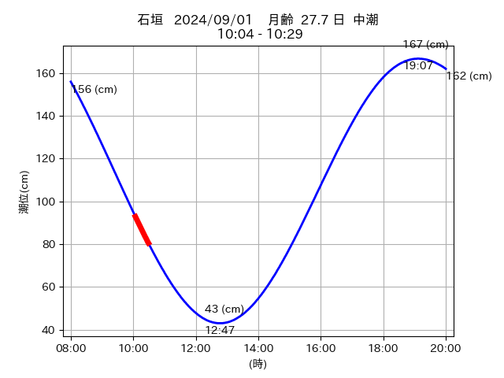

<!DOCTYPE html>
<html>
<head>
    
    <meta http-equiv="content-type" content="text/html; charset=UTF-8" />
    
        <script>
            L_NO_TOUCH = false;
            L_DISABLE_3D = false;
        </script>
    
    <style>html, body {width: 100%;height: 100%;margin: 0;padding: 0;}</style>
    <style>#map {position:absolute;top:0;bottom:0;right:0;left:0;}</style>
    <script src="https://cdn.jsdelivr.net/npm/leaflet@1.9.3/dist/leaflet.js"></script>
    <script src="https://code.jquery.com/jquery-1.12.4.min.js"></script>
    <script src="https://cdn.jsdelivr.net/npm/bootstrap@5.2.2/dist/js/bootstrap.bundle.min.js"></script>
    <script src="https://cdnjs.cloudflare.com/ajax/libs/Leaflet.awesome-markers/2.0.2/leaflet.awesome-markers.js"></script>
    <link rel="stylesheet" href="https://cdn.jsdelivr.net/npm/leaflet@1.9.3/dist/leaflet.css"/>
    <link rel="stylesheet" href="https://cdn.jsdelivr.net/npm/bootstrap@5.2.2/dist/css/bootstrap.min.css"/>
    <link rel="stylesheet" href="https://netdna.bootstrapcdn.com/bootstrap/3.0.0/css/bootstrap.min.css"/>
    <link rel="stylesheet" href="https://cdn.jsdelivr.net/npm/@fortawesome/fontawesome-free@6.2.0/css/all.min.css"/>
    <link rel="stylesheet" href="https://cdnjs.cloudflare.com/ajax/libs/Leaflet.awesome-markers/2.0.2/leaflet.awesome-markers.css"/>
    <link rel="stylesheet" href="https://cdn.jsdelivr.net/gh/python-visualization/folium/folium/templates/leaflet.awesome.rotate.min.css"/>
    
            <meta name="viewport" content="width=device-width,
                initial-scale=1.0, maximum-scale=1.0, user-scalable=no" />
            <style>
                #map_b1b5afd60415747667d2ad34ae08dbea {
                    position: relative;
                    width: 2048.0px;
                    height: 1600.0px;
                    left: 0.0%;
                    top: 0.0%;
                }
                .leaflet-container { font-size: 1rem; }
            </style>
        
</head>
<body>
    
    
            <div class="folium-map" id="map_b1b5afd60415747667d2ad34ae08dbea" ></div>
        
</body>
<script>
    
    
            var map_b1b5afd60415747667d2ad34ae08dbea = L.map(
                "map_b1b5afd60415747667d2ad34ae08dbea",
                {
                    center: [24.301, 123.986],
                    crs: L.CRS.EPSG3857,
                    zoom: 12,
                    zoomControl: true,
                    preferCanvas: false,
                }
            );

            

        
    
            var tile_layer_7c9c5b0dbae002bfea081733bf5b1ff6 = L.tileLayer(
                "https://cyberjapandata.gsi.go.jp/xyz/seamlessphoto/{z}/{x}/{y}.jpg",
                {"attribution": "\u5730\u7406\u9662\u5730\u56f3", "detectRetina": false, "maxNativeZoom": 18, "maxZoom": 18, "minZoom": 0, "noWrap": false, "opacity": 1, "subdomains": "abc", "tms": false}
            ).addTo(map_b1b5afd60415747667d2ad34ae08dbea);
        
    
            var marker_ca6c8876aefbe137485f405d1e355570 = L.marker(
                [24.191, 123.555],
                {}
            ).addTo(map_b1b5afd60415747667d2ad34ae08dbea);
        
    
            var icon_2cd3e1b8feefda7adff86f707c0564c4 = L.AwesomeMarkers.icon(
                {"extraClasses": "fa-rotate-0", "icon": "info-sign", "iconColor": "white", "markerColor": "orange", "prefix": "glyphicon"}
            );
            marker_ca6c8876aefbe137485f405d1e355570.setIcon(icon_2cd3e1b8feefda7adff86f707c0564c4);
        
    
        var popup_9e18d96f66e38b861c0b3f9e846b31a3 = L.popup({"maxWidth": "100%"});

        
            
                var html_3189fee162fb8d41a34485c63dab1c8d = $(`<div id="html_3189fee162fb8d41a34485c63dab1c8d" style="width: 100.0%; height: 100.0%;"><table><tr><td></td></tr><tr><td><center>20240901 No.1 </center></table></td></tr></table</div>`)[0];
                popup_9e18d96f66e38b861c0b3f9e846b31a3.setContent(html_3189fee162fb8d41a34485c63dab1c8d);
            
        

        marker_ca6c8876aefbe137485f405d1e355570.bindPopup(popup_9e18d96f66e38b861c0b3f9e846b31a3)
        ;

        
    
    
            var poly_line_acc438c2d1c34de70b73d57ff39a2b7f = L.polyline(
                [[24.191, 123.555], [24.19, 123.548]],
                {"bubblingMouseEvents": true, "color": "#00FFFF", "dashArray": null, "dashOffset": null, "fill": false, "fillColor": "#00FFFF", "fillOpacity": 0.2, "fillRule": "evenodd", "lineCap": "round", "lineJoin": "round", "noClip": false, "opacity": 1.0, "smoothFactor": 1.0, "stroke": true, "weight": 3}
            ).addTo(map_b1b5afd60415747667d2ad34ae08dbea);
        
</script>
</html>
